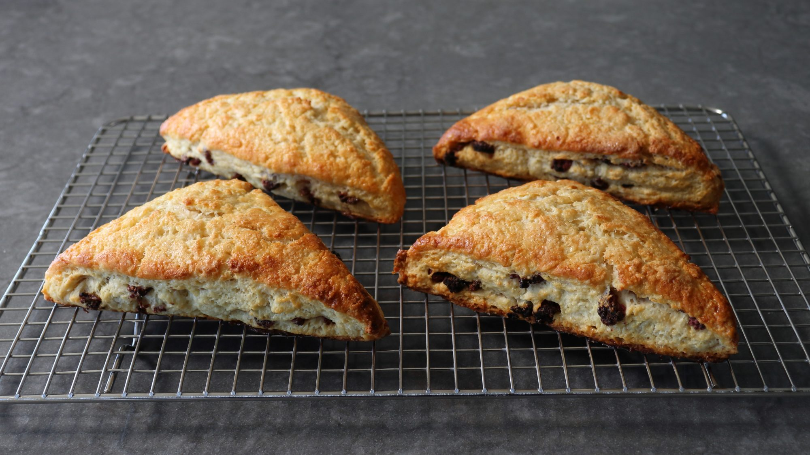

Raspberry-White Choclate Scones

Description
Raspberry white-chocolate scones don't sound like something I'd order in a bakery. I'll almost never go for a scone if presented with other options, as in any other options. Plus, this sounds like it's going to be very sweet, and maybe closer to a large triangular cookie. But if the baker explained that it wasn't going to be sweet, and the raspberries had been freshly dried, and the white chocolate grated and used for part of the butter, I might be convinced. To summarize, I would order this scone.
White chocolate is very buttery, which is why it works so well with the rest of the fatty goodness. Besides adding some richness, it also left just the right hint of white chocolate flavor, which, for whatever reason, is a perfect pairing with the raspberries. Especially raspberries we've slowly dried in the oven to chewy, sweet/tart perfection. And if you're hesitant to use your oven that long for just a pan of fruit, you can always pick up a rack of ribs, or pork belly to go along for the ride.
If you like this idea, but actually prefer a sweet, more dessert-like scone, you can toss in a handful of white chocolate chips, and I think these would come out fine. You could also use fresh raspberries, but those do add a fair amount of moisture, so I think the dried fruit works much better. Anyway, whether you stick with the original formula or make them as decadent as they sound, I really do hope you give them a try soon. Enjoy!
Here are all the ingredients you will need to make this recipe.
Ingredients
- 2 (6 ounce) containers fresh raspberries
- 2 ½ ounces white chocolate, or as needed
- 2 cups all-purpose flour, or more as needed
- 1 tablespoon white sugar, or more to taste
- ½ teaspoon kosher salt
- 4 teaspoon baking powder
- 5 tablespoons ice cold unsalted butter
- 3/4 cup milk
- 2 table spoons sour cream
- 1 large egg
- 1 tablespoon milk
Once you have all the ingredients its time to make the recipe.
- Preheat the oven to 225 degrees F (110 degrees C).
- Line a baking sheet with a silicone liner.
- Place fresh raspberries about 1 inch apart on the prepared baking sheet.
- Bake in the preheated oven for 4 hours, then turn oven off, leaving the berries inside for 8 hours, or overnight.
- Preheat the oven to 400 degrees F (200 degrees C). Line a baking sheet with a silicone liner.
- Roughly chop dried raspberries into smaller pieces and measure out ½ cup for this recipe. Reserve any extra for another use.
- Grate white chocolate on the fine side of a grater until you have ½ cup.
- Whisk 2 cups flour, sugar, salt, and baking powder together in a mixing bowl. Grate cold butter into the flour mixture, tossing every so often to coat it with flour so it doesn't start to clump. When all butter has been added, work it into the flour with a pastry blender. Add grated white chocolate and toss with a fork to incorporate.
- Whisk ¾ cup milk and sour cream together in a liquid measure, then pour that into the flour mixture. Mix with a fork until everything just barely comes together to form a shaggy dough.
- Transfer dough to a generously floured work surface and without kneading, push and pack it together with your hands until it holds its shape, adding a little flour if it's too sticky. Press dough into a rectangle, about ¾-inch thick, and roughly twice as long as it is wide.
- Sprinkle dried raspberries evenly over the dough. Spread berries out almost to the edges and press them into the dough gently. Using a bench scraper, lift one third of the dough from one of the shorter edges and fold it in over the center third; press it down and square off the edges. Repeat with the other side so your scone dough is three layers thick.
- Cut the rectangle in half with the bench scraper, then cut each half into 2 triangles. Transfer scones to the prepared baking sheet.
- Whisk egg and 1 tablespoon milk together. Brush egg wash over each scone and sprinkle with sugar.
- Bake in the upper center of the preheated oven until browned, about 25 minutes.
- Quickly and carefully transfer to a rack and let cool completely before serving, about 30 minutes.